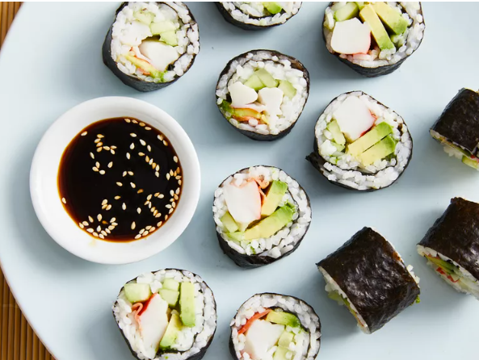

Sushi Roll!

Recipe description:
While sushi is never thought of in a "homemade" sense, our recipe solves this issue and gives you the ability to make a delicious salmon role. .
We thought of price specifically in this recipe, so you can make a serving for under $10.00.
Ingredients:
Instructions:
- Mix rice vinegar along with extra salt and sugar to fully prepare our sticky rice.
- Lay nori sheets flatly, and heat in oven for 1-2 minutes
- Lay rice onto nori sheet, and add salmon, avocado, and cucumber(Lay it preferrably onto a bamboo sheet)
- After complete rolls have been formed, slice it to make little portions
- Enjoy!
Back to home